MICROSOFT 365 COPILOT BLOG
Microsoft Copilot: What’s New | August 2026
This is the English edition of the Chinese compilation of Microsoft Copilot’s official monthly update for August 2026. This month’s updates span Cowork, Copilot Chat, Notebooks, Teams, Word, PowerPoint, Excel, SharePoint, Outlook, OneDrive, and Planner, and introduce new connectors, plugins, and IT management capabilities to help users work more efficiently in their everyday apps.

User capabilities
Cowork: more flexible control of effort level and credit consumption
- Choose an effort levelRolled out in August
Users can now select both a model and an effort level in the Cowork compose box, balancing response quality, processing speed, and Copilot Credits consumption. “Medium” is the default option for everyday work; “Light” is suited to simple tasks; and “High,” “Extra High,” and “Max” spend more time on analysis and reasoning, making them suitable for more complex work, though processing may be slower and available credits may be consumed more quickly. /costskillRolled out in August
The new/costskill shows estimated credit consumption for the current task session, the percentage of monthly credits remaining, month-to-date usage, and the monthly credit reset date, helping users stay informed about costs as they work.- “Scheduled” renamed “Automations”Rolled out in August
The former “Scheduled” tab in Cowork has been renamed “Automations” and now brings scheduled tasks and event-triggered tasks together in one place, making it easier for users to view and manage automatically running work in a unified way.
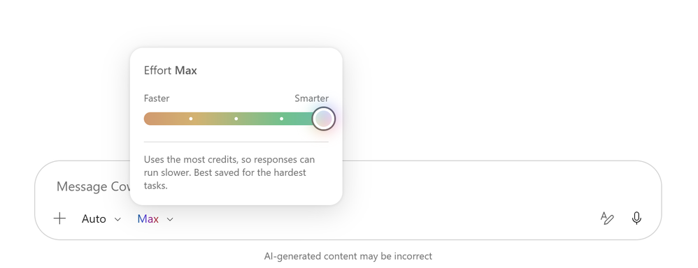
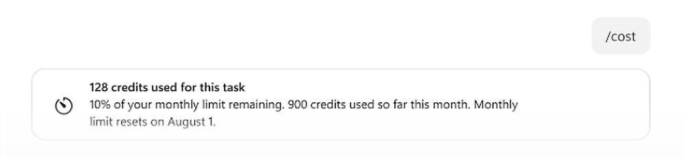
/cost skill and credit reset date in Cowork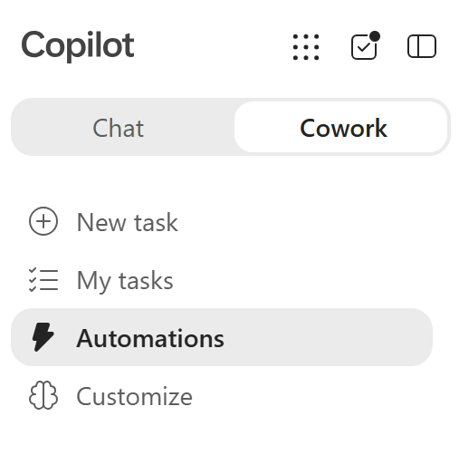
Copilot Chat: text selection, conversation sharing, and more
- Continue working only with selected textRolled out in August
Users can select a sentence, passage, or table in a Copilot response and then ask Copilot to perform the next action only on the selected content. The selected content appears in the prompt input area, making the scope of the instruction clearer and reducing the need to repeat contextual descriptions. - Share an entire conversation or a single responseRolled out in August
Users can share an entire chat through “Share chat” in the “Share” menu at the top right of the page, or choose “Share response” from the “More options” menu for a response to share only that response. Recipients receive a read-only copy and can also continue the content as a new conversation of their own. - Reason over Power BI dataPublic preview in June, rolled out globally in August
Copilot Chat and Cowork can now reason over enterprise data in Power BI reports and semantic models within the user’s existing permissions, bringing governed business metrics directly into analysis and question-and-answer workflows. - Model-driven answer cardsRolled out in August
In supported Microsoft Entra account and Microsoft account experiences, Copilot can present richer answer cards based on the question, covering information types such as weather, sports, finance, images, videos, places, and news so users can get structured results more quickly. - Regenerate responses with “Try again”Rolled out in August
Users can regenerate the most recent response with “Try again,” either continuing with the original model or switching to another model before answering again, making it easy to compare results from different models. - Draft Outlook email on mobileRolled out in August
Mobile users can describe the email they want to send directly in Copilot Chat, and Copilot generates an inline Outlook draft; users can then open the draft in the Outlook mobile app to continue editing and send it.
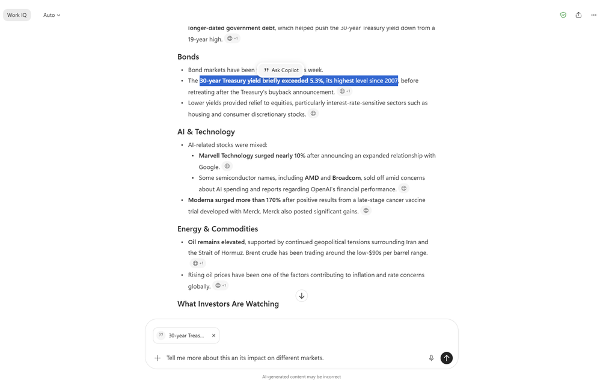
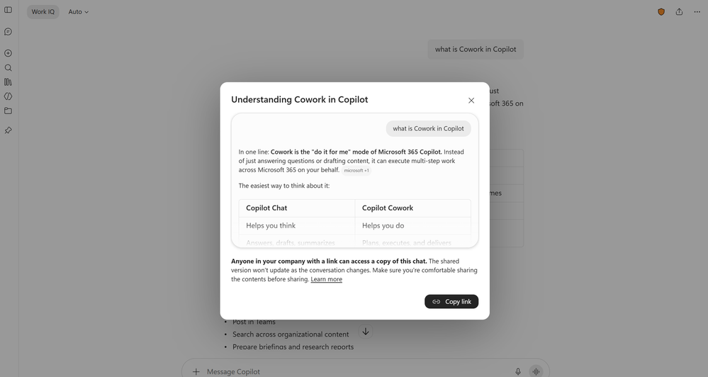
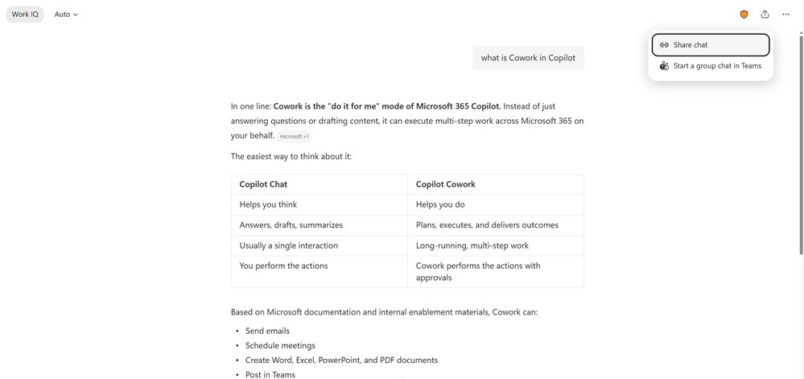
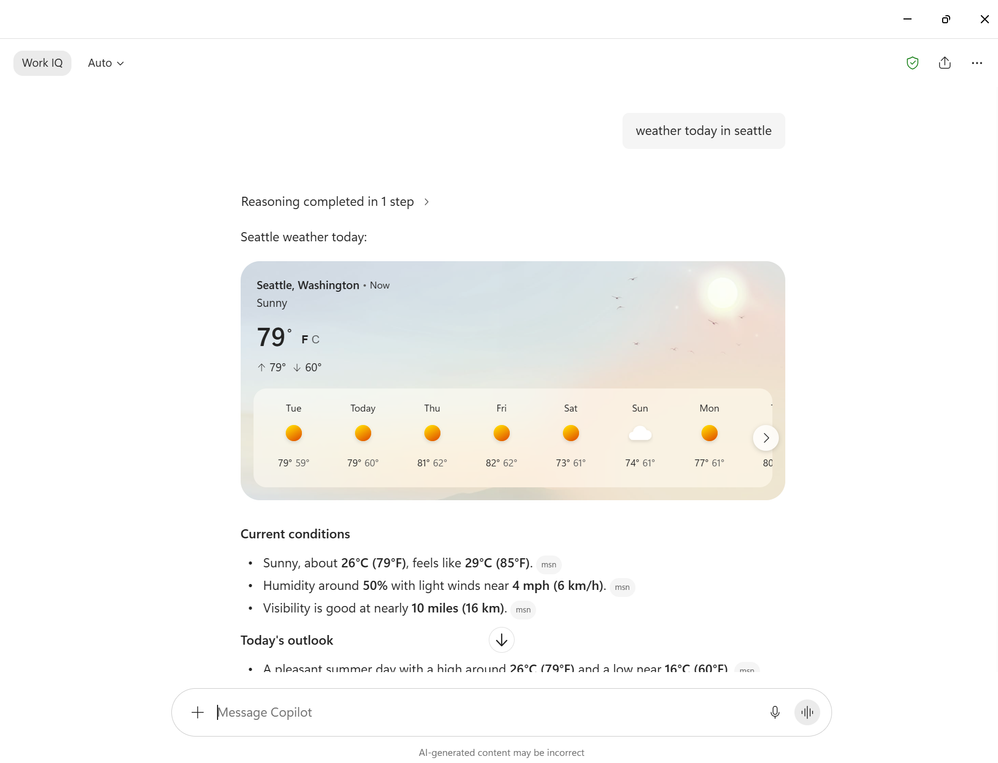
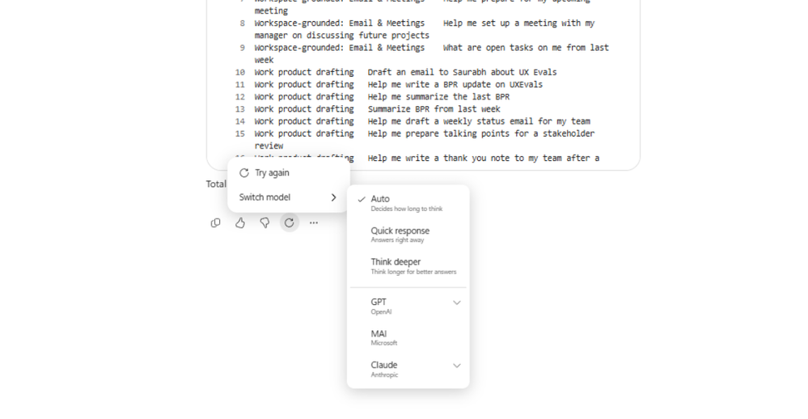
Copilot Notebooks: new ways to use notebooks
- Synchronized experiences in the Copilot app and OneNoteRolled out in August
Copilot Notebooks now offers two synchronized ways to work: use the Copilot app for lightweight chat, managing reference sources, and creating artifacts; use OneNote for deeper project work, creating more types of artifacts, and collaborating with others. Select “Open in OneNote” to go directly to the same synchronized notebook. - Recommend artifacts better suited to the projectRolled out in August
Notebooks uses Work IQ together with existing notebook content to recommend suitable artifacts to create, and can use that context to generate Word documents, Excel workbooks, or PowerPoint presentations that are more specific and better aligned with the current project. - Multimodal capture on AndroidRolling out in September
Android will support capturing audio, images, and notes at the same time and organizing these inputs into structured notebook notes. This capability is also available through OneNote for iOS and iPad.
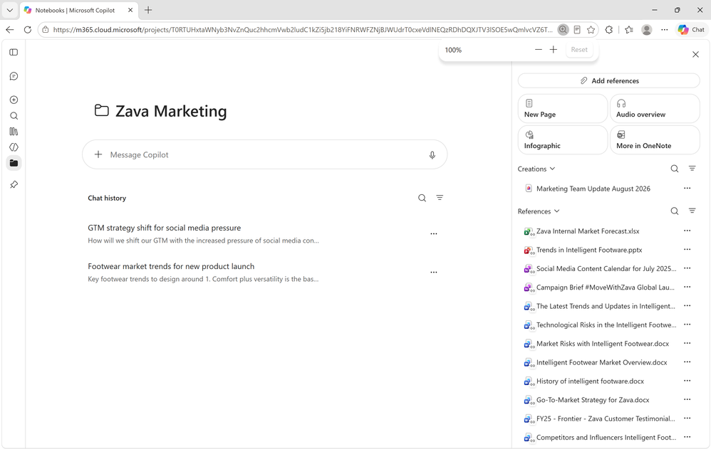
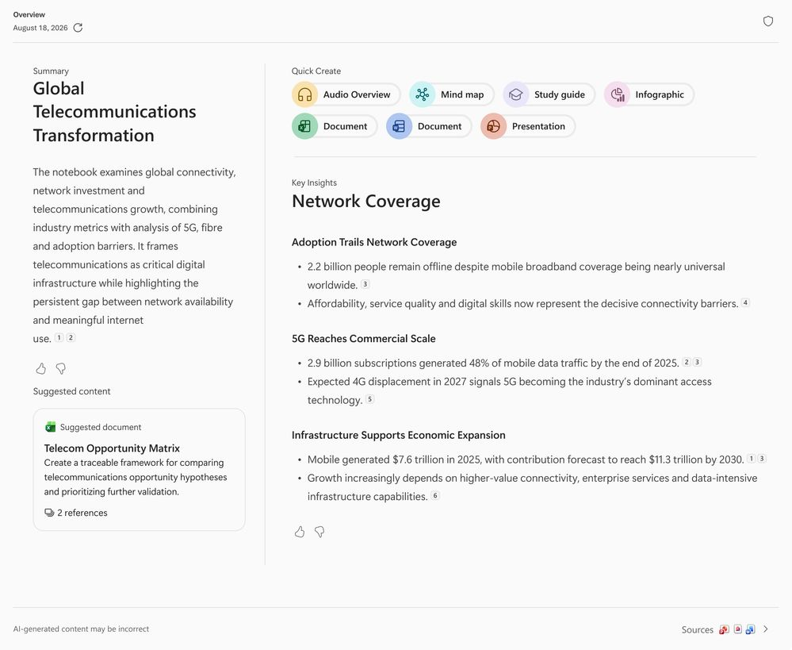
Copilot in Teams: switch the language of meeting recaps
Rolled out in AugustTeams meeting recaps now include a language-switching control, allowing users to convert a meeting recap to another language after it has been generated without regenerating the entire recap.
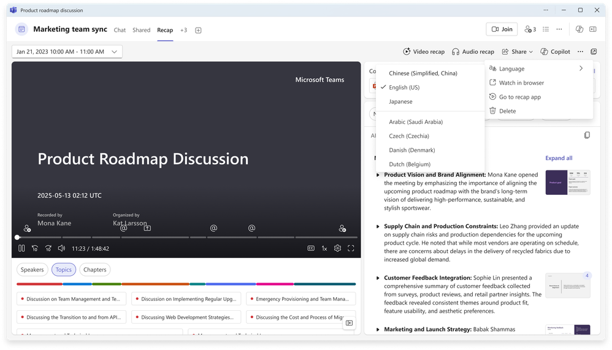
Copilot in Word: hyperlinks, image understanding, and precise highlighting
- Insert and format hyperlinks directlyRolled out in August
Copilot can now insert and format hyperlinks directly in Word documents as requested by the user, reducing the steps involved in manually locating the right place, pasting a URL, and adjusting styles. - Understand images in referenced documentsRolled out in August
Copilot can understand images in referenced documents and use relevant text and visual information together when generating content, making results drafted from reference materials more complete. - Highlight only text that was actually rewrittenRolled out globally in August
After Copilot performs a rewrite, it now highlights only the specific words that changed rather than the entire passage, making it easier for users to quickly identify, review, and accept changes.
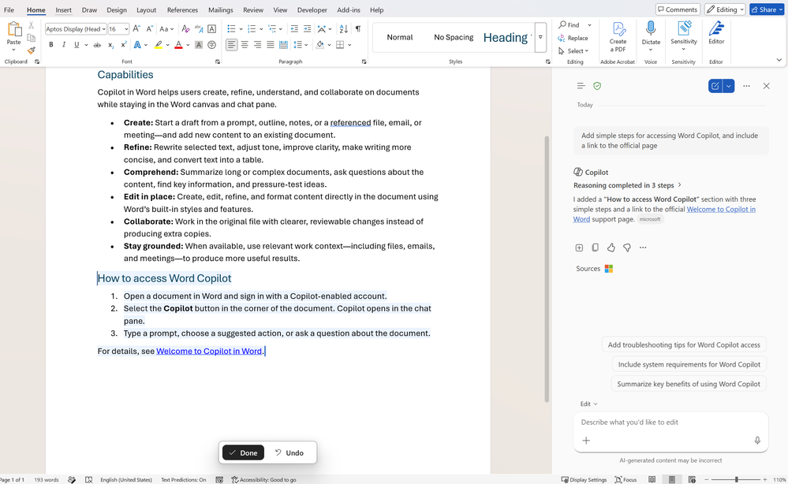
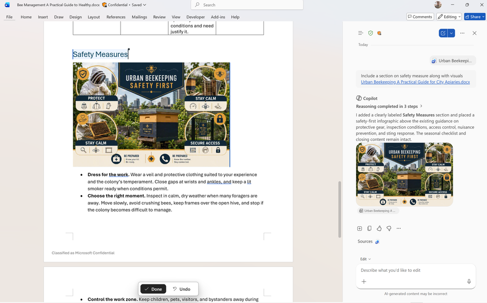
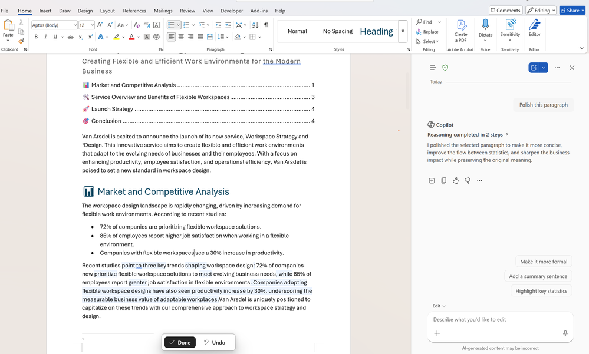
Copilot in PowerPoint: stronger brand control and collaboration
- Notify relevant people and assign tasks in commentsRolled out in August
Copilot can notify relevant people directly in PowerPoint comment threads and assign follow-up items as tasks, helping teams move from feedback to execution more quickly while reducing tool switching and manual tracking. - Strictly follow brand templatesRolled out in August
When strict brand adherence is enabled, Copilot uses only organization-approved templates and slide master layouts, does not add or remove placeholders, and does not create layouts on its own. This mode is suitable for formal external, regulated, or highly brand-sensitive presentations. - Guide generation through notesRolled out in August
Template designers can add reusable natural-language generation instructions to slide notes. Thereafter, whenever Copilot uses that template to create a presentation, it reads those notes and follows their content and layout guidance. - Manage personal custom skillsRolled out in August
Users can upload, create, edit, and delete personal custom skills, turning frequently used PowerPoint guidance into reusable capabilities that can be invoked at any point in subsequent presentation workflows. - Translation experience moves into CopilotRolled out in August
PowerPoint’s translation capability has moved from the ribbon into Copilot, with faster translation processing and text boxes that dynamically resize based on the translated text length, reducing manual formatting after translation. - Edit SmartArt, charts, and shapesRolled out in Frontier in August
Copilot can now directly edit SmartArt, charts, and shapes on the canvas while maintaining the presentation’s brand style as it adjusts the content.
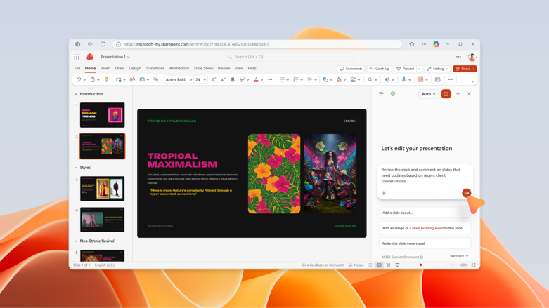
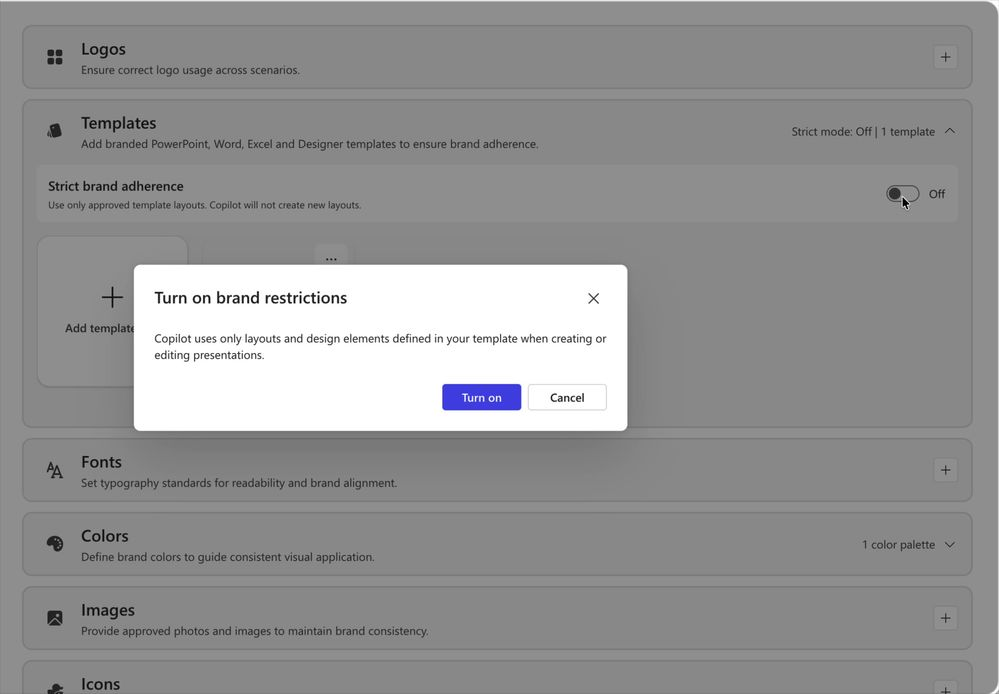
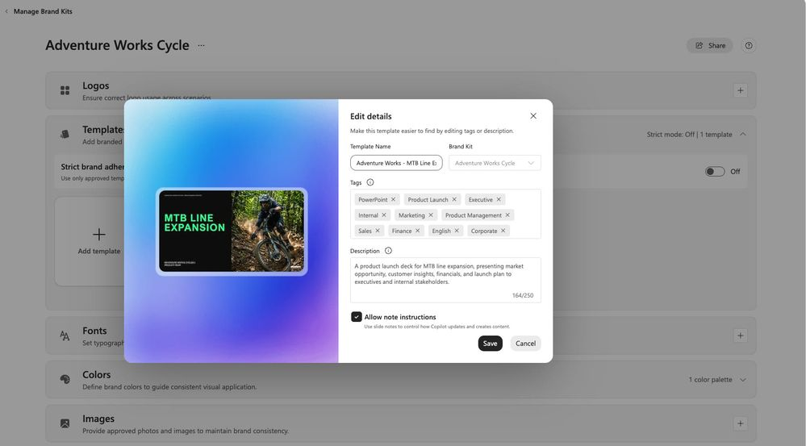
Copilot in Excel: change history skill and chat history
- Change history skillRolled out in August
The new change history skill can summarize recent changes to a workbook, identify editors, and explain modifications made by users or AI. Users can also ask Copilot to undo an edit, restore a formula, or return the workbook to an earlier usable state. - Chat historyRolled out in August
Copilot in Excel now retains previous conversations and sessions. Users can open chat history from the menu at the top left of the Copilot pane and continue viewing or working with earlier work in order of most recent use.
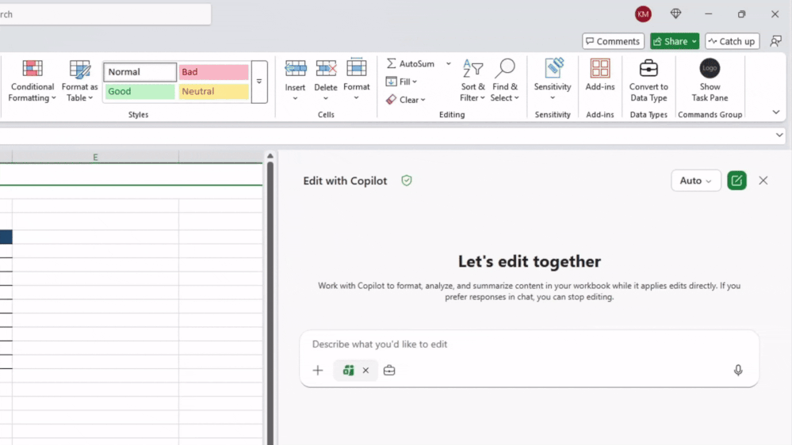
Copilot in SharePoint: personal skills
Public preview in August, rolling out globally in DecemberUsers can create personal skills that work across different SharePoint sites and OneDrive. Each skill is saved as a Markdown file in the user’s OneDrive, making it easy for individuals to maintain, update, and reuse their own work guidance.
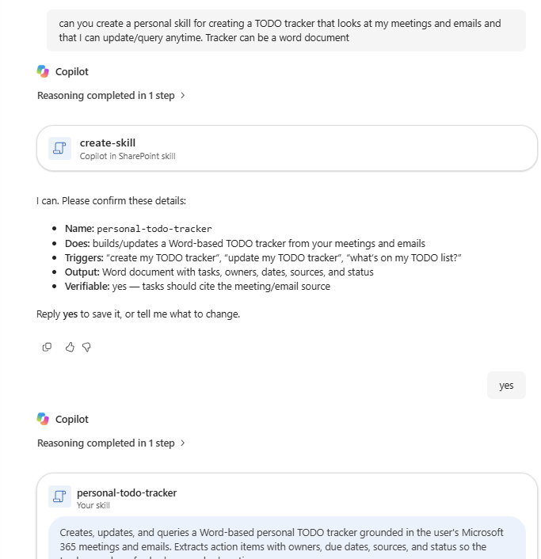
Copilot in Outlook: enhancements for agents, email, and management
- Use custom engine agents directlyRolled out in August
Users can now access custom engine agents directly in Outlook, bringing organization-built, specialized agent capabilities into email and calendar workflows. - Manage email and calendars with natural languageRolled out in August
Users can conversationally ask Copilot to organize email, apply categories, create folders, manage inbox rules, and handle meetings and calendar events, reducing repetitive manual management.
Copilot in OneDrive: improved file-handling capabilities
Public preview in August, rolling out globally in DecemberCopilot in OneDrive can now find and analyze files, create summaries, dashboards, and presentations based on file content, and save or share results without leaving OneDrive, making the flow from finding materials to producing deliverables more seamless.
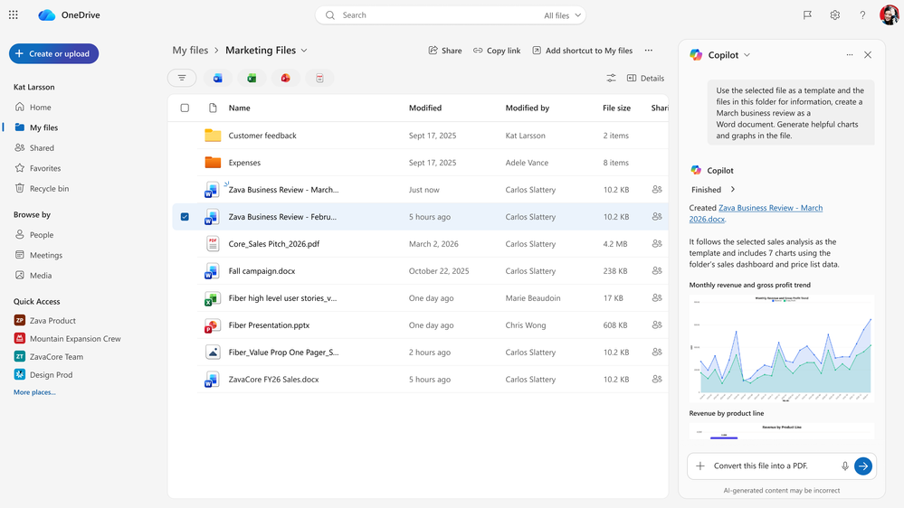
Copilot in Planner: enhanced status reports and tasks
- Generate project status reportsRolled out in Frontier in August
Planner Agent can generate status reports covering project progress, risks, overall status, and next steps. Users can specify the audience, tone, length, and sections to include, tailoring reports to different reporting scenarios. - Create and query Planner tasksRolling out in September
Copilot will support creating Planner tasks directly and querying task information in Planner with natural language, making it easier for users to track and advance their work.
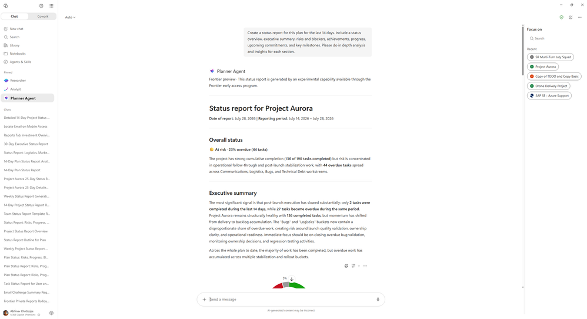
New connectors and plugins
New connectors and plugins further expand the business systems and industry knowledge Copilot can access securely, enabling users to retrieve information, reason, and take action while respecting their organization’s existing permissions, compliance, and security policies. This month’s additions include:
| Industry | Connectors and plugins |
|---|---|
| Financial services | Mercury, Xero |
| Legal services | iManage Work, Boardwise, Harvey, Descrybe Legal Engine, Relativity, Everlaw |
| Professional and business services | Statista, Crossbeam, ZoomInfo, IDC |
| Energy and resources | S&P Global Energy |
| Healthcare and life sciences | Scite, Consensus |
| Software and technology | Adobe Journey Optimizer, GoDaddy, Asana |
IT admin capabilities
Data export and GitHub Copilot AI Credits
- Export Copilot and Agent 365 dashboard dataRolling out in September
The Copilot dashboard and Agent 365 dashboard will support exporting de-identified row-level metrics and attributes for building custom reports. Administrators can gain insights at the organizational and user-interaction levels while removing personally identifiable information. - GitHub Copilot AI Credit support in InsightsRolled out in July
The Consumption Dashboard in Insights now supports GitHub Copilot AI Credit usage. Managers, Insights analysts, and global administrators can analyze credit consumption and compare actual spending with budgets to better understand and manage AI usage costs.
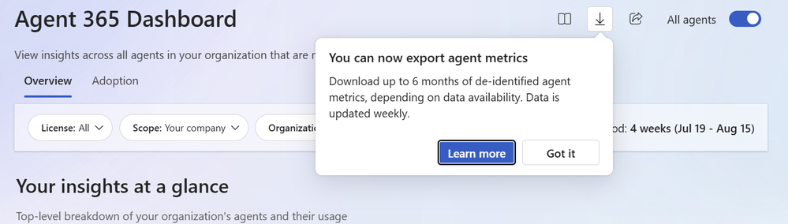
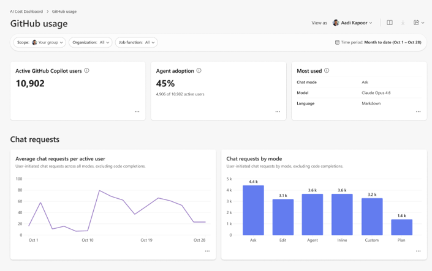